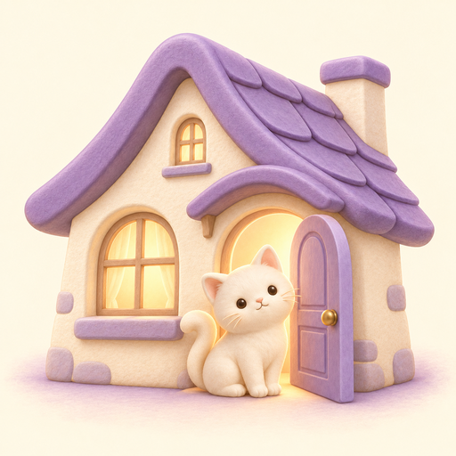

Mandy's Home
Open my Home 🏠
Put this on your phone:
1. Tap Chrome's ⋮ menu (top right).
2. Tap Add to home screen (or Install).
3. Tap Add. The kitty house icon appears on your phone.
1. Tap Chrome's ⋮ menu (top right).
2. Tap Add to home screen (or Install).
3. Tap Add. The kitty house icon appears on your phone.